책방
제목 옆 「복사」를 눌러 판매글에 붙여넣으세요
표지 촬영 1권
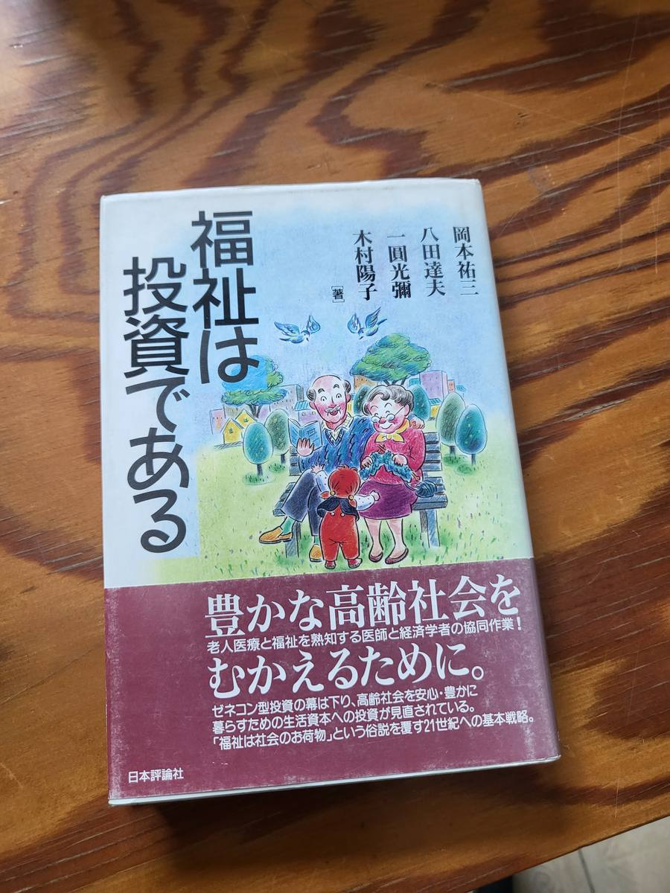
| 번호 | 표지 | 제목 | 저자 · 출판사 | 복사 |
|---|---|---|---|---|
| 1 |
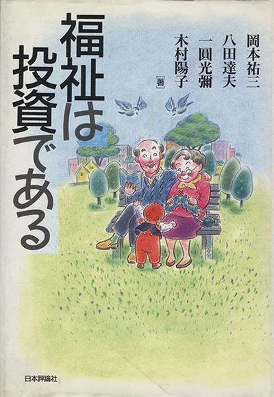 |
福祉は投資である | 岡本祐三・八田達夫・一圓光彌・木村陽子 |
서가 만 1107 12권
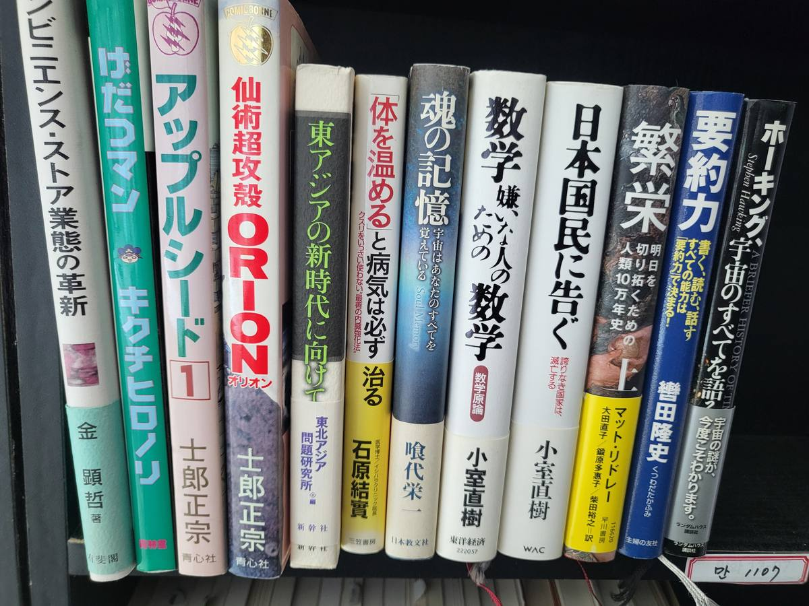
| 번호 | 표지 | 제목 | 저자 · 출판사 | 복사 |
|---|---|---|---|---|
| 1 | コンビニエンス・ストア業態の革新 | 金顕哲 | ||
| 2 |
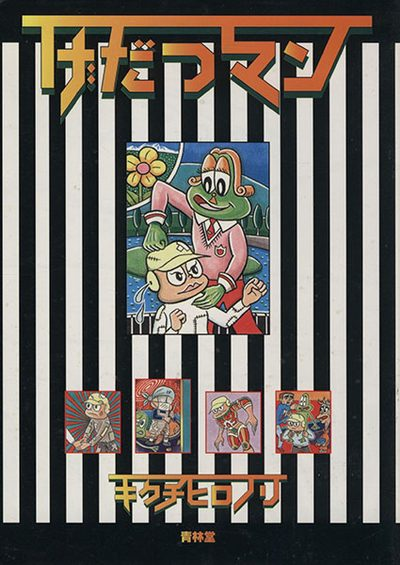 |
げだつマン | キクチヒロノリ | |
| 3 |
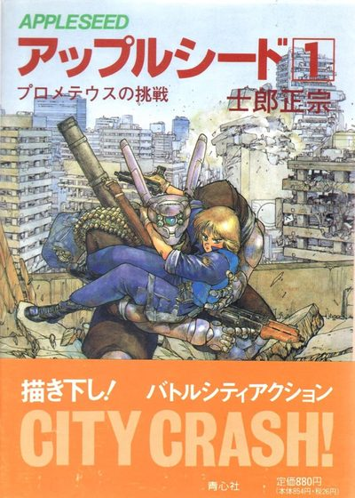 |
アップルシード 1 | 士郎正宗 | |
| 4 |
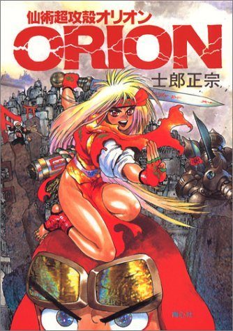 |
仙術超攻殻ORION | 士郎正宗 | |
| 5 |
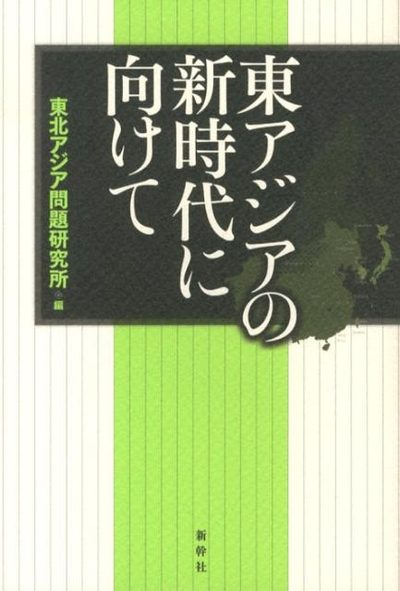 |
東アジアの新時代に向けて | 東北アジア問題研究所 編 | |
| 6 |
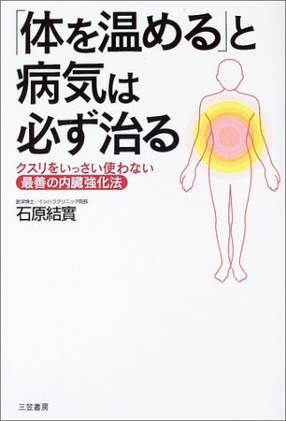 |
「体を温める」と病気は必ず治る クスリをいっさい使わない“最善の内臓強化法” | 石原結實 | |
| 7 |
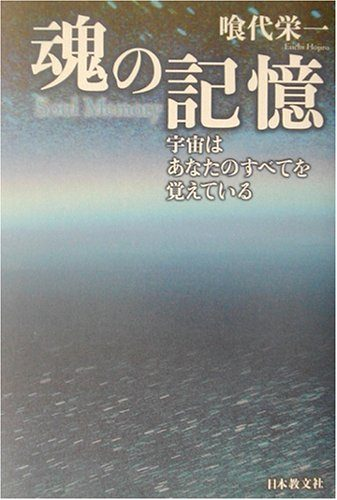 |
魂の記憶 宇宙はあなたのすべてを覚えている | 喰代栄一 | |
| 8 |
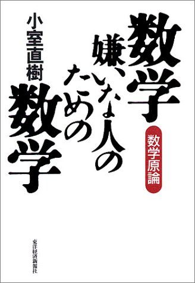 |
数学嫌いな人のための数学 数学原論 | 小室直樹 | |
| 9 | 日本国民に告ぐ 誇りなき国家は滅亡する | 小室直樹 | ||
| 10 |
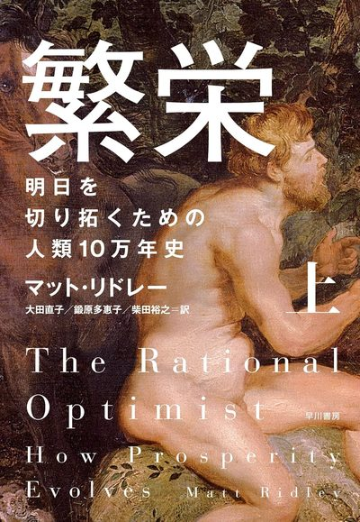 |
繁栄（上） 明日を切り拓くための人類10万年史 | マット・リドレー／大田直子・鍛原多惠子・柴田裕之 訳 | |
| 11 |
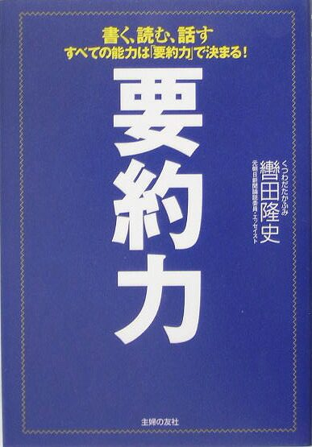 |
要約力 書く、読む、話す すべての能力は「要約力」で決まる！ | 轡田隆史 | |
| 12 |
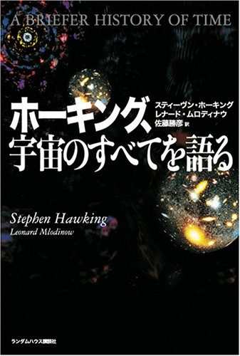 |
ホーキング、宇宙のすべてを語る | スティーヴン・ホーキング／レナード・ムロディナウ／佐藤勝彦 訳 |
서가 만 1108 23권
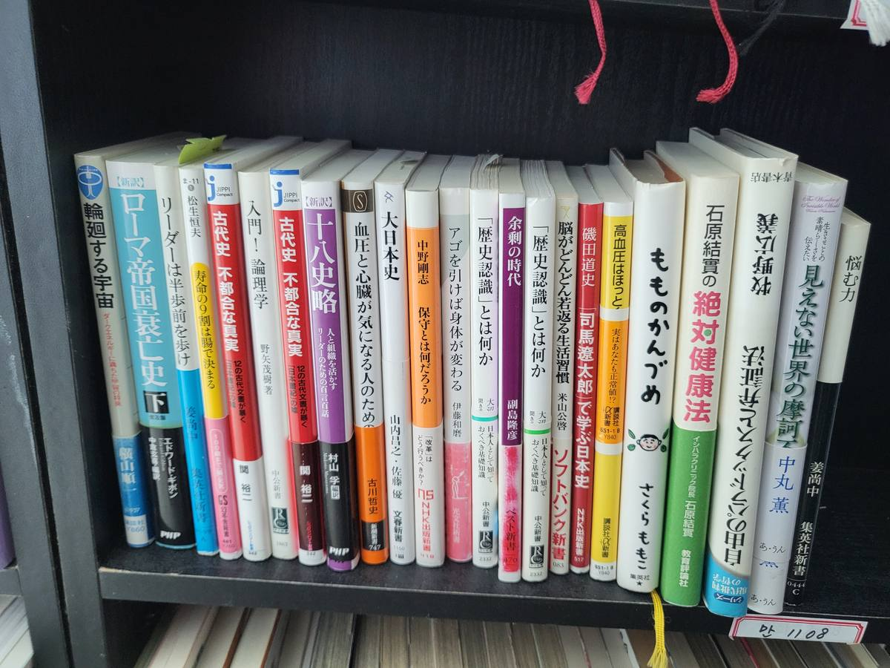
| 번호 | 표지 | 제목 | 저자 · 출판사 | 복사 |
|---|---|---|---|---|
| 1 | 輪廻する宇宙 ダークエネルギーに満ちた宇宙の将来 | 横山順一 | ||
| 2 |
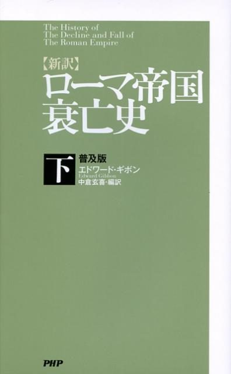 |
［新訳］ローマ帝国衰亡史（下） | エドワード・ギボン／中倉玄喜 編訳 | |
| 3 |
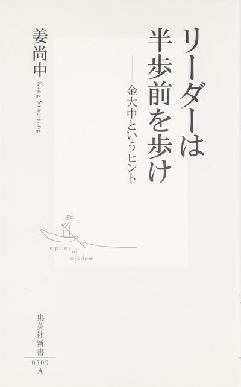 |
リーダーは半歩前を歩け 金大中というヒント | 姜尚中 | |
| 4 | 寿命の9割は腸で決まる | 松生恒夫 | ||
| 5 |
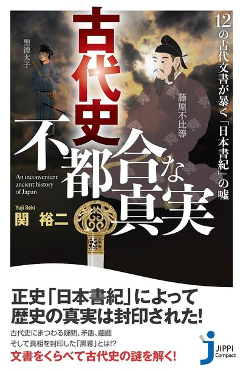 |
古代史 不都合な真実 12の古代文書が暴く「日本書紀」の嘘 | 関裕二 | |
| 6 |
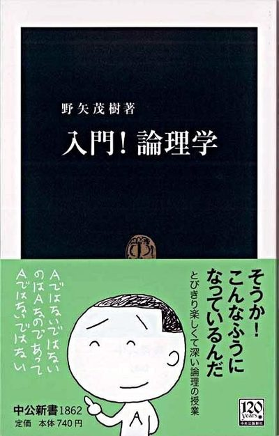 |
入門！論理学 | 野矢茂樹 | |
| 7 | 古代史 不都合な真実 | 関裕二 | ||
| 8 | ［新訳］十八史略 人と組織を活かすリーダーのための百言百話 | 村山孚 編訳 | ||
| 9 | 血圧と心臓が気になる人のための本 | 古川哲史 | ||
| 10 | 大日本史 | 山内昌之・佐藤優 | ||
| 11 | 保守とは何だろうか | 中野剛志 | ||
| 12 |
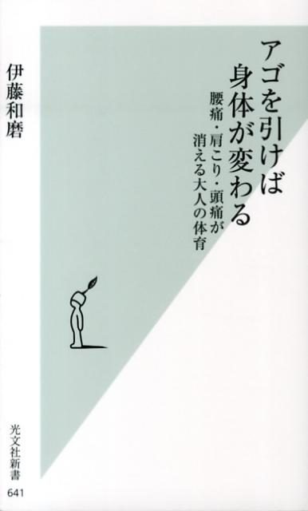 |
アゴを引けば身体が変わる 腰痛・肩こり・頭痛が消える大人の体育 | 伊藤和磨 | |
| 13 |
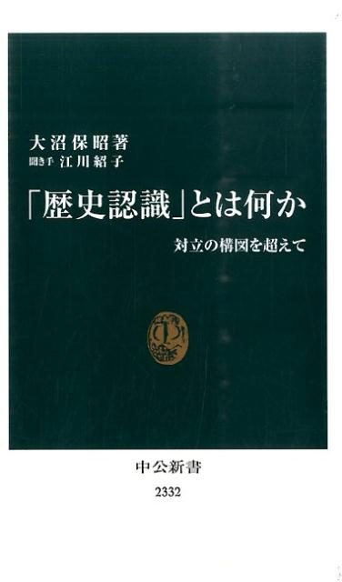 |
「歴史認識」とは何か 対立の構図を超えて | 大沼保昭／江川紹子 聞き手 | |
| 14 |
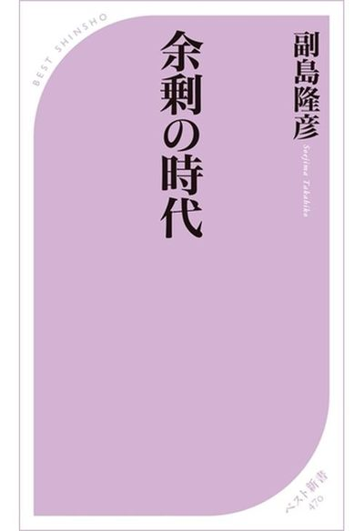 |
余剰の時代 | 副島隆彦 | |
| 15 | 「歴史認識」とは何か | 大沼保昭／江川紹子 聞き手 | ||
| 16 |
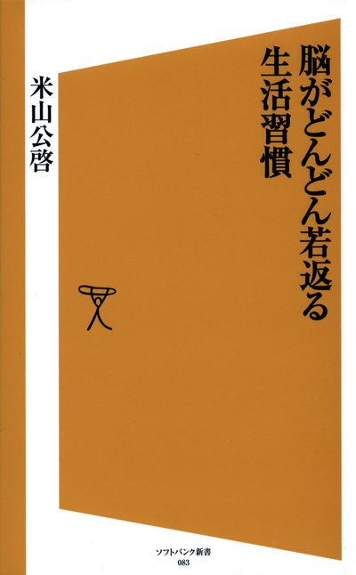 |
脳がどんどん若返る生活習慣 | 米山公啓 | |
| 17 |
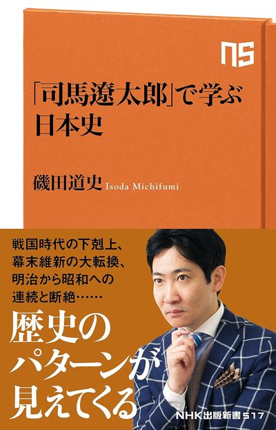 |
「司馬遼太郎」で学ぶ日本史 | 磯田道史 | |
| 18 |
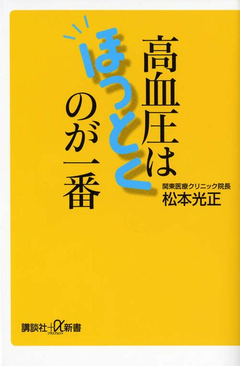 |
高血圧はほっとくのが一番 実はあなたも正常値!? | 松本光正 | |
| 19 |
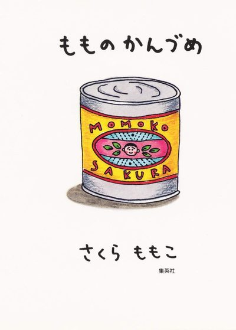 |
もものかんづめ | さくらももこ | |
| 20 |
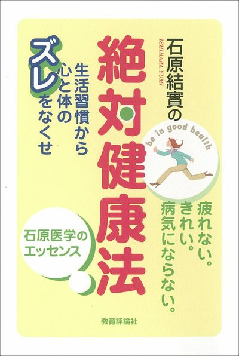 |
石原結實の絶対健康法 生活習慣から心と体のズレをなくせ | 石原結實 | |
| 21 |
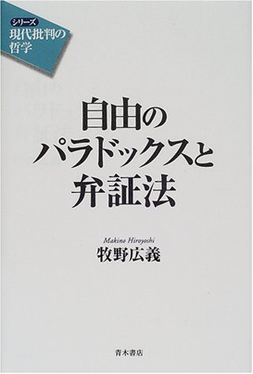 |
自由のパラドックスと弁証法 シリーズ「現代批判の哲学」 | 牧野広義 | |
| 22 | 見えない世界の摩訶不思議 生きることの素晴らしさを伝えたい | 中丸薫 | ||
| 23 |
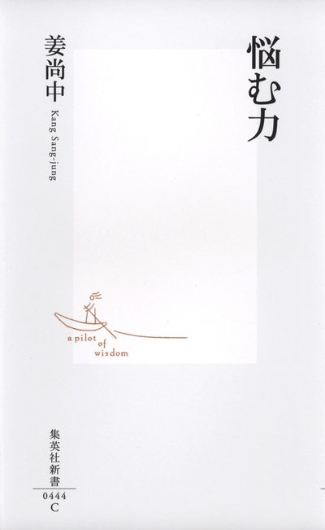 |
悩む力 | 姜尚中 |
이 목록은 어떻게 만들었나요?
서가 사진에서 책등 글자를 옮겨 적은 뒤, 제목·저자·출판사를 일본 서점과 국립국회도서관 검색으로 하나씩 대조했습니다.
복사 버튼은 주제목만 복사합니다. 부제는 화면에만 보여 주니, 필요하면 부제까지 직접 선택해 복사하세요.
21번은 책등이 거꾸로 꽂혀 있어, 사진을 180도 돌려 읽은 뒤 서지 검색으로 대조했습니다.
표지 사진은 각 책의 ISBN으로 일본 서점·중고서점(楽天ブックス · Amazon.co.jp · ブックオフオンライン)에서 찾아, 표지에 인쇄된 제목·저자·출판사·총서번호를 한 장씩 눈으로 대조한 것입니다. 실물을 찍은 사진이 아니라 판을 확인하기 위한 참고용입니다.
5번은 1991년판(253쪽)과 2010년 재간본(275쪽)의 쪽수가 달라, 실물 판권장(奥付)을 보고 확정해야 합니다. 4번도 1985년 초판과 1989년판이 같은 표지를 씁니다.